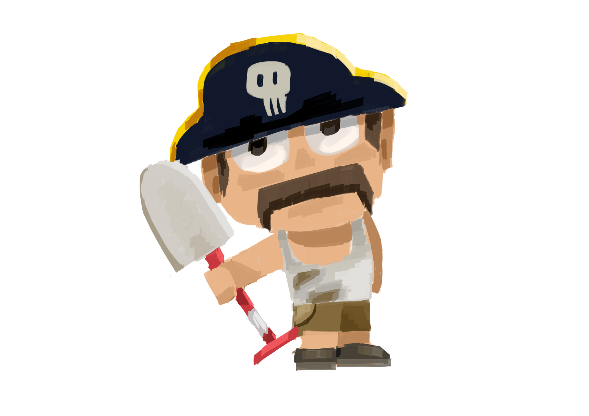
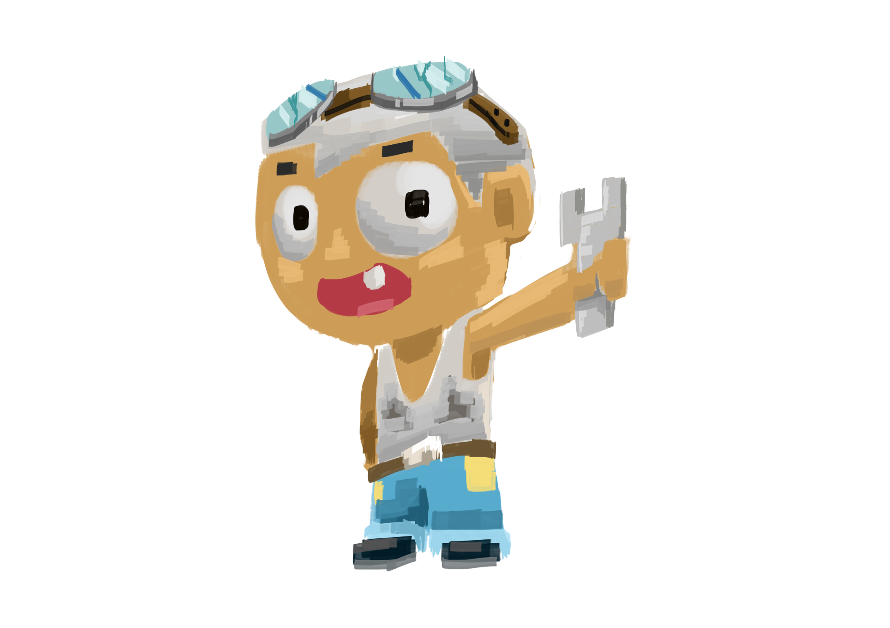
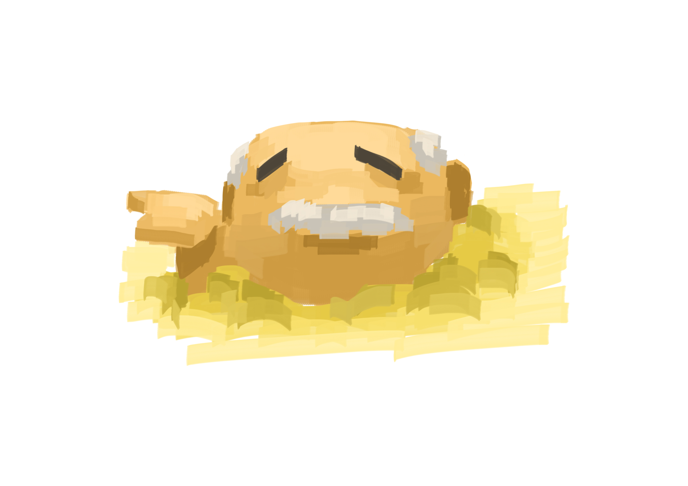
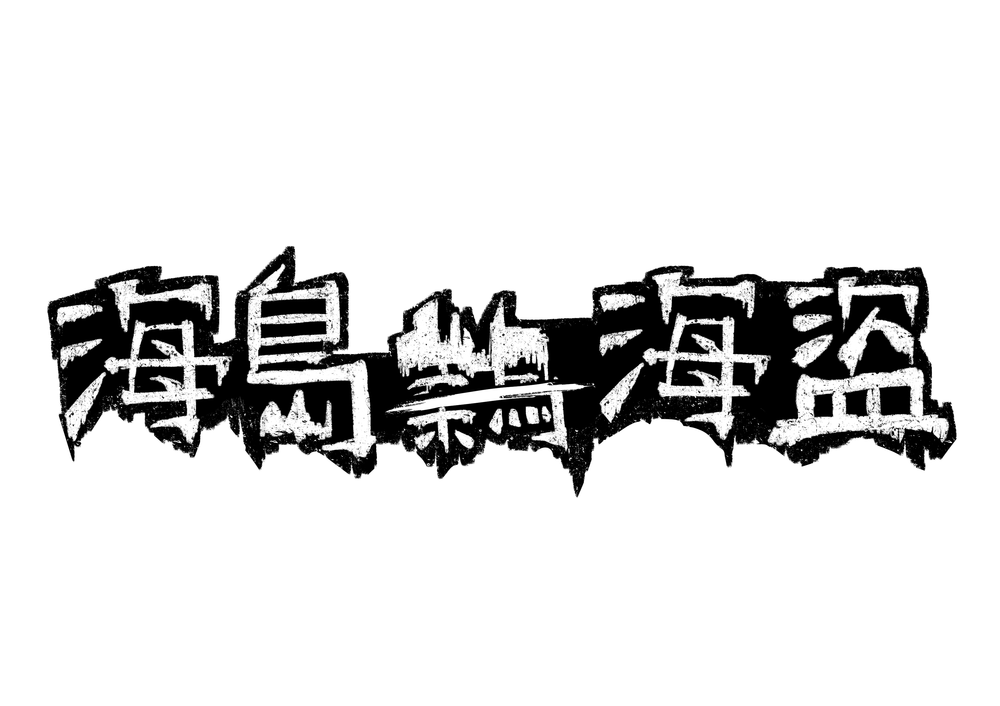

主角-海盜
維修工-圖坎
島民-帕曼
個人企劃書
海島、菜鳥、海盜
Island、Rookie、Pirate
|
 |
| 目錄 |
| 製作動機、遊戲目的 |
| 故事大綱、玩法介紹 |
| SWOT分析 |
| 風格圖 |
| 補充概念圖 |
|
製作動機 |
我想挑戰自己製作一款 3D 小遊戲。 知道技術上還無法做到精緻的作品， 正因如此，我選擇將故事和玩法縮限， 讓遊戲更小巧、簡單易上手。 透過簡短直接的故事情境，玩家可以快速進入遊戲核心， 不會因為複雜或脫節的劇情而感到尷尬。 我希望這款遊戲能展現 「即使規模不大，也能帶來完整又有趣的體驗」。 |
|
|
遊戲目的 |
本遊戲的目的在於提供玩家一個簡單易上手、 故事精煉的小品體驗。透過縮限遊戲規模， 避免冗長劇情造成遊玩脫節的情況，並確保操作與體驗的流暢性。 同時，本作品也是我挑戰自我、嘗試製作 3D 遊戲的實驗， 藉此累積遊戲設計與開發經驗。 |
|
故事大綱 |
一名初次出海的海盜，因為技術拙劣讓船隻擱淺在一座海島。 船體受損急需修復，但修理工沒那麼多時間等他， 若無法在期限內籌到足夠的金錢，他將再也無法出海。 於是，他開始在島上的沙坑中拼命挖掘，希望找到能換錢的寶物。 然而，沙中潛伏著奇怪的阻礙，每一次挖掘都可能帶來意想不到的麻煩。 在時間一天天流逝的壓力下，菜鳥海盜能否籌到足夠的資源， 修好船，離開這座孤島？ |
|
|
玩法介紹 |
你是一個第一次出海就把船撞爛的菜鳥海盜。現在船擱淺在一座奇怪的小島上，沒錢、沒食物、只有一把鏟子。任務很單純：在沙坑裡挖寶、賣錢、修船。但很快你就會發現——這島有點怪。每次你挖到寶物，都有機會把一個叫「帕曼」的傢伙一起挖出來。他會跟你討寶物，不給就開揍。唯一能讓他消失的方法，就是把夠重的東西往他身上丟，把他「重新埋回去」。你能攜帶的東西重量有限，背包滿了只能回營地賣掉換錢，再拿錢去找那個懶惰的修船工「圖坎」付工錢。不過他那張維修工證照快過期了，如果在期限內還沒籌夠錢——那就永遠定居在此吧。整個遊戲就圍繞著這樣的循環：挖掘 → 遭遇 → 解決 → 賣錢 → 睡覺 → 再挖一次。 |
| SWOT分析 | |||
| S | W | O | T |
|
規模小、上手快：不用大地圖和複雜系統， 玩家一進來就能直接玩。 劇情短且有趣：角色個性鮮明，很容易讓人留下印象。 明確的循環：探索→挖掘→收集→修船。 |
玩法重複性高：主要核心就是挖掘和收集， 長時間可能缺乏變化。 美術與技術限制：3D 質感可能偏簡單。 劇情深度有限：故事短小，缺乏更完整的世界觀。 |
市場接受小品遊戲：玩家很樂於嘗試輕鬆、 無厘頭的小遊戲。 容易延伸： 未來可加新寶物、 NPC、島嶼，像「DLC 式」擴充。 |
容易被忽略：在眾多獨立遊戲中， 規模小的作品可能不夠顯眼。 玩家流失快：玩幾輪後可能覺得內容差不多，留不住人。 技術挑戰：雖然是小遊戲， 但 3D 環境和挖掘系統仍需要時間和經驗去克服。 |
|
 |
 |
 |
|
|
主角-海盜 |
維修工-圖坎 |
島民-帕曼 |
地圖 |